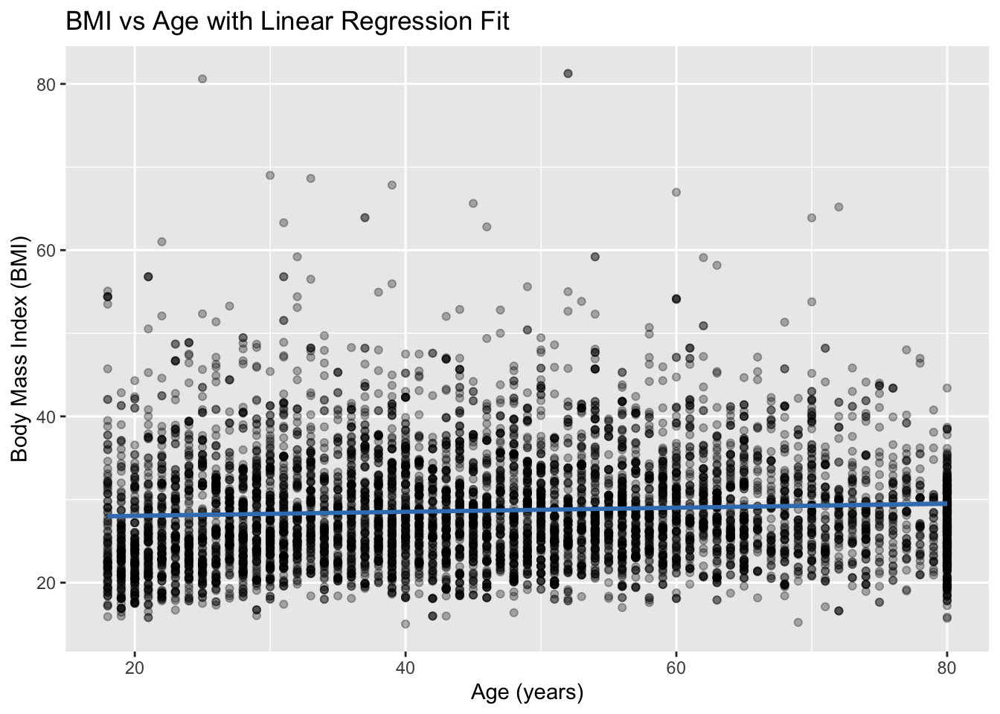
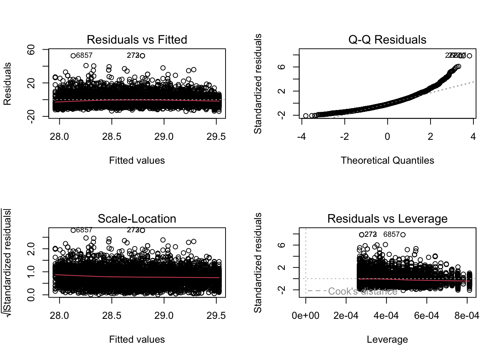

Code
# Install NHANES package if needed
if (!requireNamespace("NHANES", quietly = TRUE)) {
install.packages("NHANES")
}
library(NHANES)
library(dplyr)Linear regression is that one student in class who shows up everywhere: In basic stats In machine learning In econometrics In random policy reports your boss forwards you at 4:59 pm
It’s simple enough to teach in an intro course, but powerful enough that a huge chunk of applied research quietly runs on some flavor of it. If you’ve ever seen a sentence like:
“After adjusting for age and sex, the outcome increased by 2.3 units (95% CI: 1.5, 3.1)”
…there’s a high chance a regression model was lurking behind the scenes.
In my experience the key to understanding linear regression is to know the answers to three questions:
What the linear regression model actually says (in math, but gently),
How the coefficients are estimated (least squares idea),
How to fit and interpret a model in R using real data.
By the end, the goal is not that you “worship” linear regression, but that you see it for what it is: A workhorse model with clear assumptions. It is a baseline method you should almost always understand before throwing fancy machine learning at a problem. A translator between messy data and interpretable stories.
And because this is HEOR/health-policy flavored, we’ll end by talking about why this humble model is still one of the most useful tools in our toolkit.
# Install NHANES package if needed
if (!requireNamespace("NHANES", quietly = TRUE)) {
install.packages("NHANES")
}
library(NHANES)
library(dplyr)Suppose we want to model a continuous outcome \(Y\) (e.g., BMI) as a function of a single predictor \(X\) (e.g., age).
The simple linear regression model is:
\[ Y_i = \beta_0 + \beta_1 X_i + \varepsilon_i, \]
where:
We typically assume that:
In practice, we do not know \(\beta_0\) and \(\beta_1\). We estimate them from data using the least squares method.
Given \(n\) observations, we choose \(\hat{\beta}_0\) and \(\hat{\beta}_1\) to minimize the sum of squared residuals:
\[ \text{SSE}(\beta_0, \beta_1) = \sum_{i=1}^n \left( Y_i - (\beta_0 + \beta_1 X_i) \right)^2. \]
The values of \(\hat{\beta}_0\) and \(\hat{\beta}_1\) that minimize this quantity are the ordinary least squares (OLS) estimates.
In R, we do not compute these formulas by hand; we use the lm() function. However, it is important to understand that the fitted line is the one that minimizes the squared vertical distances between observed points and the line.
We will explore how Body Mass Index (BMI) relates to age and sex using a subset of the NHANES data.
data("NHANES")
nhanes_clean <- NHANES %>%
# Keep adults only, for example
filter(Age >= 18) %>%
# Keep complete cases for the variables of interest
select(BMI, Age, Gender) %>%
filter(!is.na(BMI), !is.na(Age), !is.na(Gender))
# Inspect the first rows
head(nhanes_clean)# A tibble: 6 × 3
BMI Age Gender
<dbl> <int> <fct>
1 32.2 34 male
2 32.2 34 male
3 32.2 34 male
4 30.6 49 female
5 27.2 45 female
6 27.2 45 femaleLet’s quickly summarize the variables:
summary(nhanes_clean) BMI Age Gender
Min. :15.02 Min. :18.00 female:3763
1st Qu.:23.96 1st Qu.:31.00 male :3651
Median :27.60 Median :45.00
Mean :28.67 Mean :46.17
3rd Qu.:32.10 3rd Qu.:59.00
Max. :81.25 Max. :80.00 We’ll start with a simple model: BMI as a function of Age only.
fit_simple <- lm(BMI ~ Age, data = nhanes_clean)
summary(fit_simple)
Call:
lm(formula = BMI ~ Age, data = nhanes_clean)
Residuals:
Min 1Q Median 3Q Max
-14.011 -4.693 -1.120 3.460 52.446
Coefficients:
Estimate Std. Error t value Pr(>|t|)
(Intercept) 27.542532 0.220383 124.976 < 2e-16 ***
Age 0.024474 0.004467 5.478 4.43e-08 ***
---
Signif. codes: 0 '***' 0.001 '**' 0.01 '*' 0.05 '.' 0.1 ' ' 1
Residual standard error: 6.685 on 7412 degrees of freedom
Multiple R-squared: 0.004033, Adjusted R-squared: 0.003899
F-statistic: 30.01 on 1 and 7412 DF, p-value: 4.432e-08Key components in the output:
If the estimated slope for Age is, for example, 0.05, we would say:
For each additional year of age, BMI increases by 0.05 units on average,
according to our simple linear regression model.
This interpretation:
We can extend to multiple linear regression by including Gender:
[ _i = _0 + _1 _i + _2 _i + _i, ]
where Gender is treated as a categorical variable. R will automatically use dummy (indicator) variables.
fit_multi <- lm(BMI ~ Age + Gender, data = nhanes_clean)
summary(fit_multi)
Call:
lm(formula = BMI ~ Age + Gender, data = nhanes_clean)
Residuals:
Min 1Q Median 3Q Max
-13.990 -4.686 -1.136 3.450 52.469
Coefficients:
Estimate Std. Error t value Pr(>|t|)
(Intercept) 27.517376 0.236659 116.275 < 2e-16 ***
Age 0.024535 0.004473 5.486 4.25e-08 ***
Gendermale 0.045363 0.155469 0.292 0.77
---
Signif. codes: 0 '***' 0.001 '**' 0.01 '*' 0.05 '.' 0.1 ' ' 1
Residual standard error: 6.685 on 7411 degrees of freedom
Multiple R-squared: 0.004044, Adjusted R-squared: 0.003776
F-statistic: 15.05 on 2 and 7411 DF, p-value: 3.008e-07Now the output includes:
Suppose the summary shows something like:
Then we can interpret:
Intercept (25.0): Predicted BMI for the reference group when Age = 0. If GenderFemale is the reference category, this is BMI for a 0-year-old female (again, Age = 0 may not be directly meaningful, but the parameter is needed).
Age (0.03): Holding Gender constant, each additional year of age is associated with an average 0.03 unit increase in BMI.
GenderMale (1.2): Holding Age constant, males have on average 1.2 units higher BMI compared to females (if females are the reference category).
Note the phrase “holding other variables constant” — this is key for interpreting coefficients in multiple regression.
Visual diagnostics help assess whether a linear model is reasonable. We can plot BMI vs Age with the fitted regression line for the simple model.
library(ggplot2)
ggplot(nhanes_clean, aes(x = Age, y = BMI)) +
geom_point(alpha = 0.3) +
geom_smooth(method = "lm", se = TRUE, color = "#3b7fbf") +
labs(
title = "BMI vs Age with Linear Regression Fit",
x = "Age (years)",
y = "Body Mass Index (BMI)"
)
We can also look at diagnostic plots for the multiple regression model:
par(mfrow = c(2, 2))
plot(fit_multi)
par(mfrow = c(1, 1))
These plots help us check:
So… was all this effort to estimate and interpret slopes worth it? In HEOR and health policy, the answer is a pretty strong yes.
Here are a few reasons why linear regression still earns its keep:
We constantly want to understand how outcomes vary across people:
How do costs vary by age, comorbidity burden, or treatment group?
How does quality of life (e.g., EQ-5D) change with disease severity?
How does resource use (e.g., number of visits) change with risk factors?
“After adjusting for age and sex, patients in group A had on average $X higher costs than group B.”
Even if the model is not the final “causal” answer, it’s a very useful descriptive tool.
Economic evaluation and simulation models often need inputs such as:
Age-specific mean costs
Treatment-specific utility values
Predicted outcomes under different risk profiles
Linear regression models (and their cousins) are a natural way to estimate these inputs, for example:
Predicting annual cost as a function of age, sex, and disease stage,
Predicting utility as a function of health states,
Deriving baseline risk or progression rates conditional on covariates.
Those regression outputs then become parameters in Markov models, microsimulation models, or other decision-analytic structures.
In health policy, we rarely get perfect randomized trials for every question. We often end up comparing:
Treated vs untreated,
Insured vs uninsured,
Before vs after a policy change.
Linear regression (and generalized linear models) are a basic way to:
Adjust for measured confounders (age, sex, comorbidities, etc.),
Provide adjusted mean differences that are more interpretable than raw averages.
It’s not magic—and it doesn’t fix unmeasured confounding—but it’s often step one in a more complete causal analysis.
Even when you move to Random forests, Gradient boosting, Neural nets, you should almost always compare them to a simple linear model. Why?
It’s fast, interpretable, and easy to debug.
If a fancy model barely improves over linear regression, you might not need the extra complexity.
If a fancy model does improve a lot, linear regression helps you understand where and why the simple assumptions were failing.
In HEOR, where explainability and transparency matter (e.g., for HTA bodies, regulators, and policy stakeholders), having a clear linear model as a reference is extremely valuable.